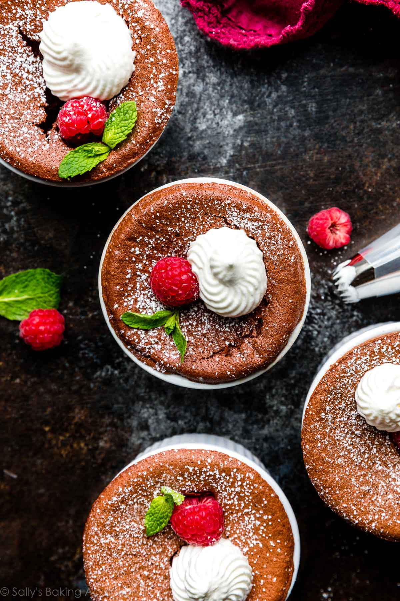

Soufflé

Chocolate Soufflé Details
- Texture: I applied some techniques I learned in class and adapted this recipe from Saveur‘s flourless soufflé as well as the bittersweet soufflé recipe found on New York Times. (Their recipe has deep, dark chocolate flavor and I found it a little heavy on the cream of tartar—just my opinion though.) The soufflé I make at home is semi-sweet. Each spoonful is perfectly balanced between (1) magically rich and (2) blissfully spongey with a set crackly top. It’s wild that one bite can encompass all this varying texture, but that’s why chocolate soufflé is so special. There’s just nothing like it.
- Flavor: Semi-sweet. I first prepared it with 1/4 cup of sugar, but reduced the final amount to 3 Tablespoons so more of the chocolate flavor comes through.
- Ease: I’m categorizing this with my advanced baking recipes simply because there’s a few moving parts and there’s an importance placed on the precise mixing methods. However, if you’re a beginner, don’t let that discourage you from trying it.
- Time: I appreciate that this recipe can go from oven to table immediately. No waiting for it to cool because soufflé will quickly fall. This recipe will take you no more than 45 minutes if using ramekins.
Chocolate Soufflé Success Tips
- Chocolate soufflé is only as good as the chocolate you use. I use and recommend semi-sweet or bittersweet baking chocolate. It’s sold in 4 ounce bars in the baking aisle near the chocolate chips. I use, love, and recommend Ghirardelli and Bakers brand. Do not use chocolate chips. The flavor, texture, and rise will be compromised.
- Whip the egg whites appropriately and fold in gently. You’ll notice that baking powder and soda are missing. That’s because all of a soufflé’s rise is from the whipped egg whites. If this step is skipped or changed, it will directly impact how your dessert rises. Beat egg whites and cream of tartar together until soft peaks form, then with the mixer still running, slowly add the sugar and beat until stiff peaks form. This is the same process we use for making chocolate swirled meringues. We only use a small amount of cream of tartar, but it has a BIG job—it helps the egg whites hold their peaks. It’s an imperative ingredient that you cannot skip. In a pinch, the same amount of lemon juice or white vinegar can be used as a substitute. But for best results, use cream of tartar. Here are many more recipes using cream of tartar too. After your egg whites reach stiff peaks, very slowly and gently fold them into the chocolate mixture in 3 additions, always being careful to avoid excessive deflating.
-
Chill the batter as the oven preheats. This is a super useful tip I learned in my class—as you preheat the oven, place the batter in the refrigerator. This quick 5-10 minute chill slightly thickens the batter and, from what I’ve experienced, helps the soufflés rise a bit taller. After refrigerating, spoon into your ramekins/dish. You could also cover and chill the batter up to 2 days in
-
Reduce oven temperature: Preheat the oven to a hot 400°F (204°C). Then immediately after you place the soufflés inside, reduce the temperature down to 375°F (191°C). Why? The initial hot burst of air will help the batter rise up, while the slightly lower heat will help evenly cook the centers.
Steps
- Chop up your quality chocolate, then melt it with butter in a double boiler or in 20 second increments in the microwave. Some chocolate soufflé recipes use heavy cream instead of butter, but I prefer the flavor, texture, and richness butter provides.
-
Separate your eggs. It’s convenient that this recipe uses 3 egg whites and 3 egg yolks—there’s no extra yolks or whites. If you’re interested, an egg separator always makes this task this easier. You don’t want any remnants of yolks in your egg white because any fat will prevent the whites from whipping properly.
-
Whisk egg yolks, vanilla, and salt into your chocolate/butter mixture.
-
Whip egg whites and cream of tartar into soft peaks.
-
After you slowly add/beat in the sugar, the egg whites will considerably expand in volume and eventually reach stiff peaks.
-
In 3 additions, slowly fold the beaten whites into the chocolate mixture.
-
Refrigerate batter as you preheat the oven.
-
pread or brush every crevice/inch of your ramekin with softened butter, then coat in granulated sugar. The sugar coating helps the soufflés rise straight up (no sticking!) and adds a pleasant crust around the exterior.
-
Spoon batter into ramekins, then level off with a knife or flat icing spatula.
-
Run a knife, icing spatula, or your thumb around the very top rim, creating a “channel” between the batter and the rim of your pan. Why? This forces the soufflé to rise UP without expanding OUT.
Serving
You can serve it plain, but crème anglaise, which is a thin custard cream, is a popular option. We like ours with a dusting of confectioners’ sugar, a little whipped cream (halve this whipped cream recipe), and fresh raspberries. Other options include a spoonful of red wine chocolate ganache, a drizzle of salted caramel, or you could even use the raspberry sauce from these white chocolate raspberry cheesecake bars. Have fun with garnishes!